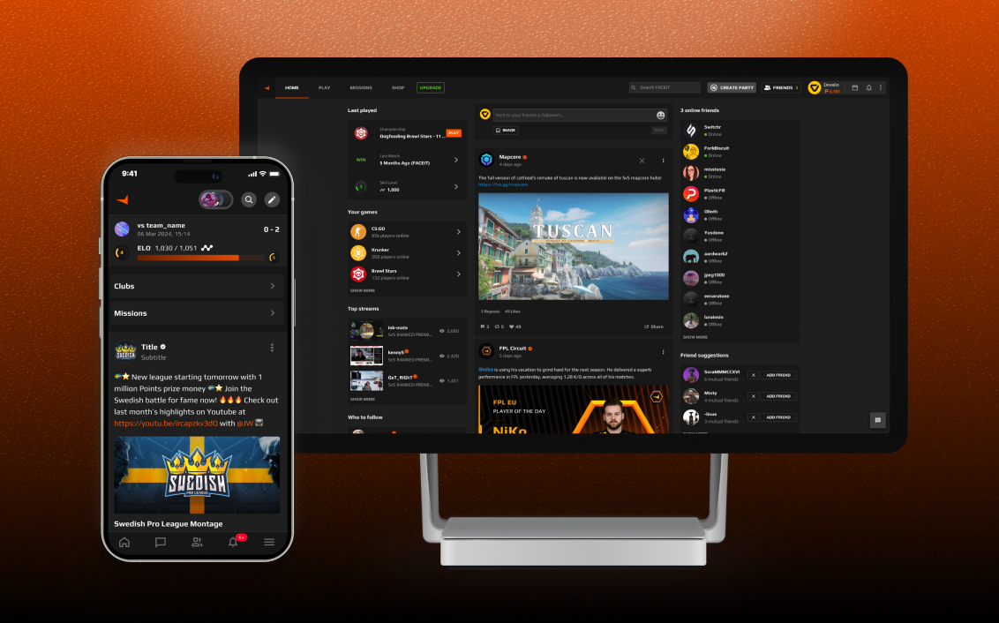
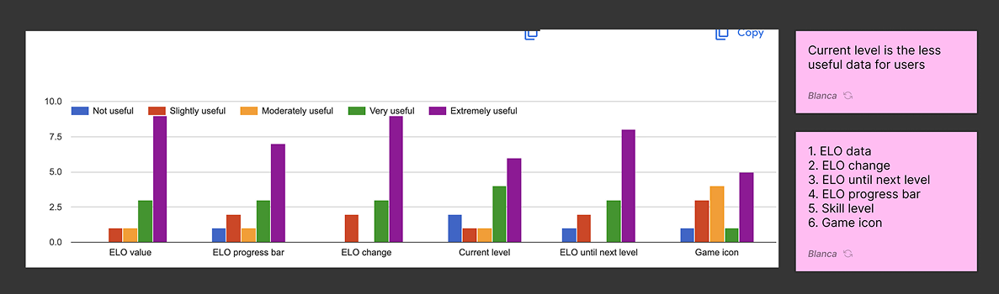
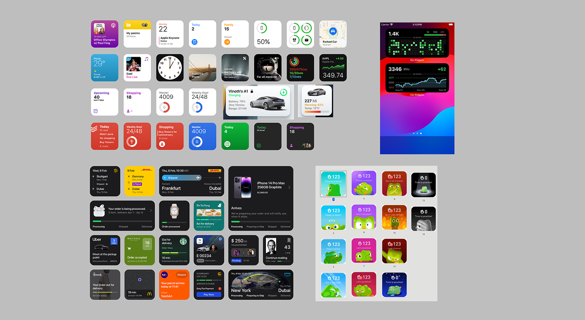
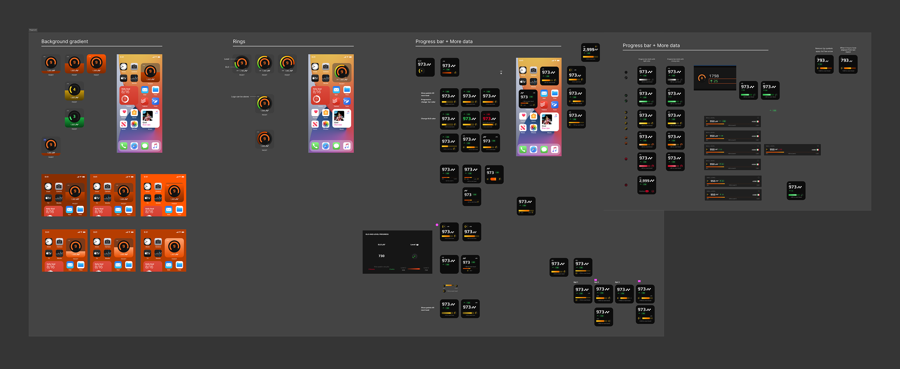
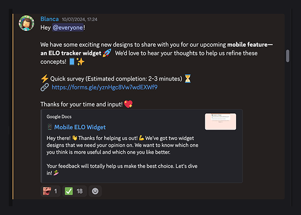
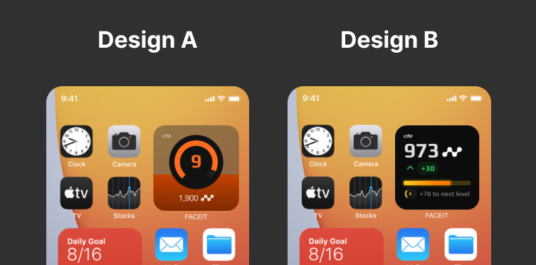
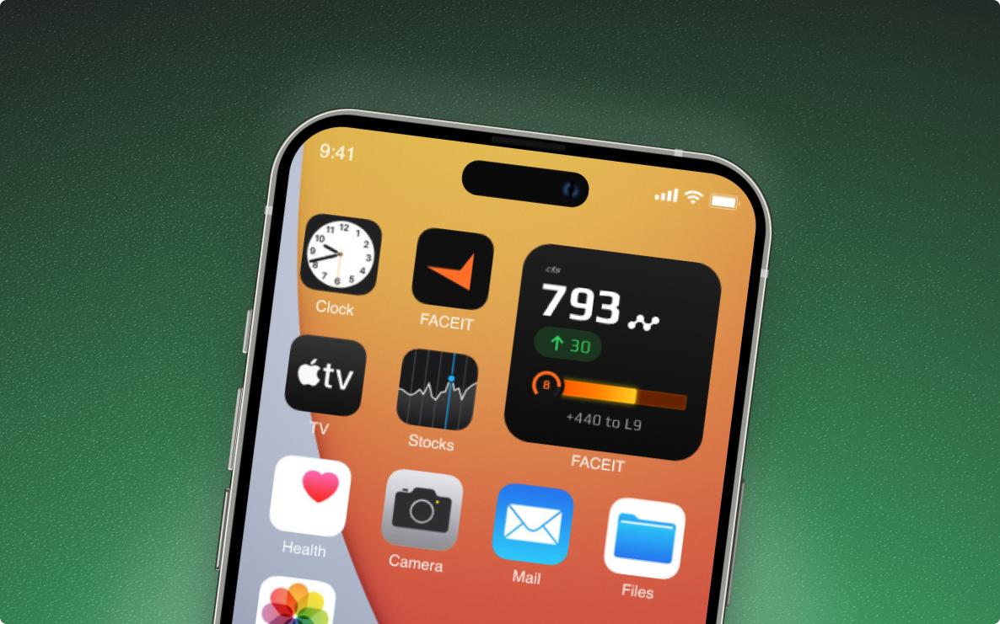
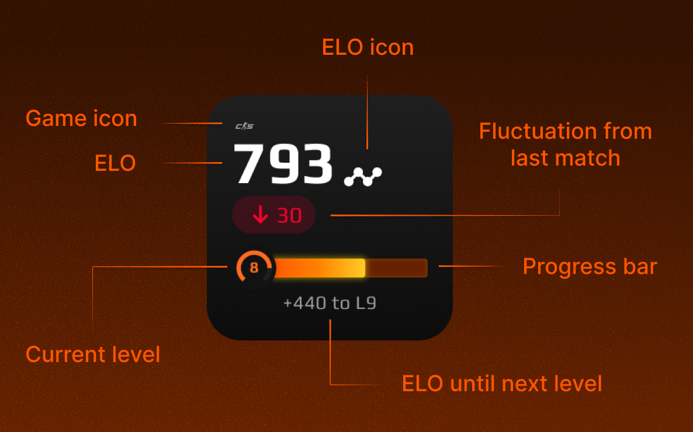
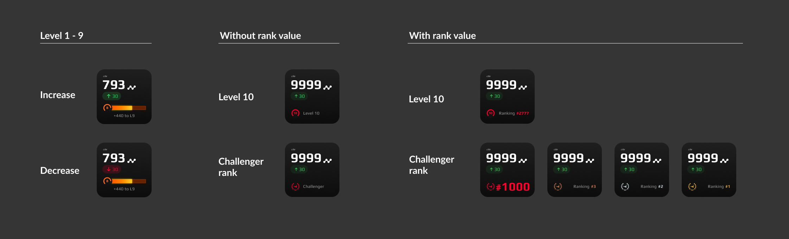

The FACEIT mobile App is the mobile extension of FACEIT, one of the world’s leading competitive gaming platforms. It was designed to bring e-sports and competitive gaming into a portable environment. The app allows players to manage their gaming experience anytime, anywhere. It helps users track stats, join leagues, add reminders for matches, and stay in touch with the community and their friends.
Objective
Increase user engagement on mobile and convert that engagement into more gameplay on the FACEIT desktop platform.
Challenge
Determine what type of widget could meaningfully support engagement goals and guide users from mobile interactions to desktop play.
Opportunity
The mobile app lacked widgets, presenting a chance to place FACEIT directly on users’ home screens and create consistent daily touchpoints.
Insight
FACEIT players are motivated by competitiveness and social validation. Currently, they must open the app intentionally to track their performance.
Hypothesis
A stats widget that shows users their top three performance metrics from their last five matches could encourage more people to install the FACEIT mobile widget and check the app more often. Seeing their progress on the home screen gives quick reminders, boosts competitive motivation, and draws players back in to keep improving.

User Research
We mapped the main KPIs users use to track their progress and conducted a survey to understand which ones were more useful for them. This helped us decide which KPIs to prioritize when designing the widget.

Competitive Analysis
We examined mobile widgets emphasizing tracking personal progress, showing how achievements and performance metrics can be surfaced on the home screen. This revealed effective ways to make progress visible and engaging, encouraging users to check their status regularly.

Ideation
I explored a wide range of information architecture options for the widget, from a simple level-meter design highlighting a single key metric to a more complex layout showing multiple KPIs and detailed performance data.
After presenting several directions to stakeholders, we agreed on two promising options, which were tested with users to gather feedback.

User Testing
We ran a survey evaluating both directions, Design A (simple) and Design B (detailed), with our Discord community. Feedback focused on usefulness, clarity, missing data, and preference.


- Design B was preferred for richer, more detailed data.
- Design A appealed for simplicity but lacked clarity.
- Background colors were easier to interpret in Design B.
- Users requested more meaningful metrics and less clutter.
The results validated a direction toward a comprehensive widget that balances detail with clarity.
I iterated on the widget design based on feedback to balance detailed metrics with clarity. Key improvements included:


- More meaningful stats at a glance: kept detailed metrics but organized them for easier scanning.
- Cleaner structure and hierarchy: improved spacing, grouping, and typography.
- Clearer background indicators: colors redesigned for quick understanding.
- Home-screen friendly: compact design despite added details.
I had also to design the variations for each of the players possible levels and ranks in order to show the most useful KPIs for each case.

One of the main challenges was balancing the amount of data shown on the widget because users wanted detailed stats, but too much information could feel overwhelming. Designing for simplicity while still providing meaningful insights was tricky.
It was also important that the widget didn’t demotivate users who were on a losing streak or seeing their stats drop. To avoid negative reinforcement, the design keeps colors and feedback neutral, focusing on progress rather than setbacks.
Also with this project I learned the value of iterating closely with users to refine the information hierarchy and clarity, that small visual and interaction tweaks can significantly improve engagement, and that providing meaningful insights often matters more than minimalism.
Future iterations will expand the widget to emphasize social competitiveness, allowing users to compare performance with friends, increasing motivation and driving more gameplay on mobile and desktop.